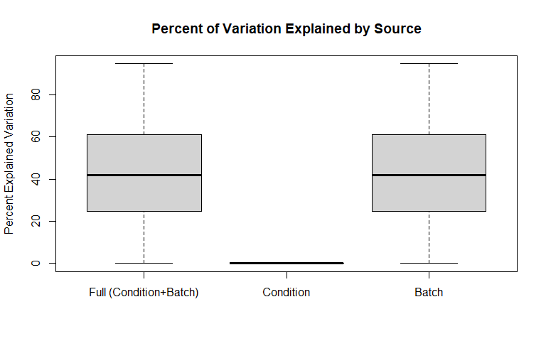
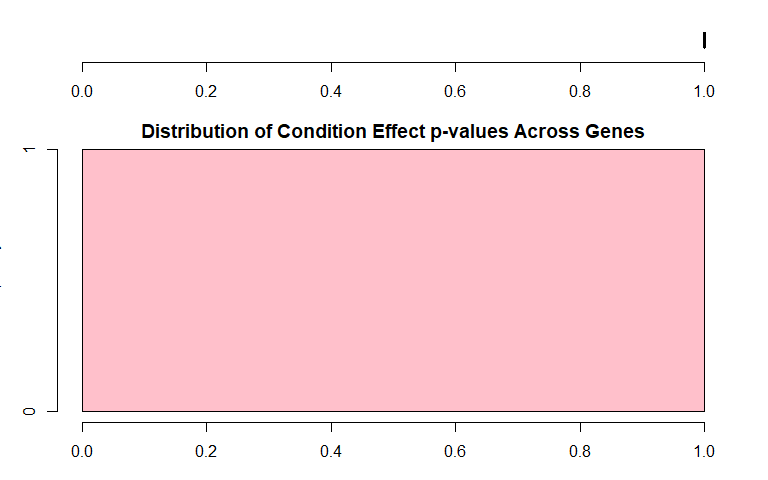
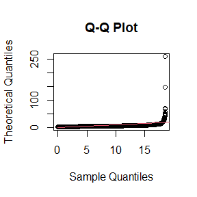

Tests for checking Batch Effects
| Batch 1=India | Batch 2=China | Batch 3=Africa | Batch 4=India | Batch 5=USA | |
|---|---|---|---|---|---|
| Condition 1 | 5 | 4 | 11 | 38 | 16 |
| Standardized Pearson Correlation Coefficient | Cramer’s V | |
|---|---|---|
| Confounding Coefficients (0=no confounding, 1=complete confounding) | NA | NA |

| Full (Condition+Batch) | Condition | Batch | |
|---|---|---|---|
| Min. | 0.079 | 0 | 0.079 |
| 1st Qu. | 24.71 | 0 | 24.71 |
| Median | 42.01 | 0 | 42.01 |
| Mean | 43.22 | 0 | 43.22 |
| 3rd Qu. | 61.05 | 0 | 61.05 |
| Max. | 94.75 | 0 | 94.75 |
| Min. | 1st Qu. | Median | Mean | 3rd Qu. | Max. | Ps<0.05 | |
|---|---|---|---|---|---|---|---|
| Batch P-values | 0 | 1.653e-13 | 1.061e-07 | 0.03024 | 0.0005317 | 0.9996 | 0.9045 |
| Condition P-values | 1 | 1 | 1 | 1 | 1 | 1 | 0 |

Boxplots for all values for each of the samples and are colored by batch membership.
This plot helps identify outlying samples.
This is a heatmap of the given data matrix showing the batch effects and variations with different conditions.
This is a heatmap of the correlation between samples.
This is a Circular Dendrogram of the given data matrix colored by batch to show the batch effects.
This is a plot of the top two principal components colored by batch to show the batch effects.
| Proportion of Variance (%) | Cumulative Proportion of Variance (%) | Percent Variation Explained by Either Condition or Batch | Percent Variation Explained by Condition | Condition Significance (p-value) | Percent Variation Explained by Batch | Batch Significance (p-value) | |
|---|---|---|---|---|---|---|---|
| PC1 | 22.64 | 22.64 | 87.4 | 0 | 1 | 87.4 | 0 |
| PC2 | 16.29 | 38.94 | 78.8 | 0 | 1 | 78.8 | 0 |
| PC3 | 12.25 | 51.18 | 50.6 | 0 | 1 | 50.6 | 0 |
| PC4 | 4.587 | 55.77 | 38.1 | 0 | 1 | 38.1 | 0 |
| PC5 | 3.13 | 58.9 | 12.3 | 0 | 1 | 12.3 | 0.05666 |
| PC6 | 2.871 | 61.77 | 46.9 | 0 | 1 | 46.9 | 0 |
| PC7 | 2.515 | 64.29 | 1 | 0 | 1 | 1 | 0.9485 |
| PC8 | 2.308 | 66.59 | 4.9 | 0 | 1 | 4.9 | 0.4705 |
| PC9 | 1.943 | 68.54 | 11.3 | 0 | 1 | 11.3 | 0.0793 |
| PC10 | 1.827 | 70.36 | 1.5 | 0 | 1 | 1.5 | 0.9022 |
| PC11 | 1.583 | 71.95 | 0.2 | 0 | 1 | 0.2 | 0.997 |
| PC12 | 1.478 | 73.43 | 6.1 | 0 | 1 | 6.1 | 0.3545 |
| PC13 | 1.361 | 74.79 | 3.1 | 0 | 1 | 3.1 | 0.6932 |
| PC14 | 1.288 | 76.07 | 4 | 0 | 1 | 4 | 0.5867 |
| PC15 | 1.269 | 77.34 | 5.1 | 0 | 1 | 5.1 | 0.4489 |
| PC16 | 1.179 | 78.52 | 1 | 0 | 1 | 1 | 0.9541 |
| PC17 | 1.155 | 79.68 | 5.5 | 0 | 1 | 5.5 | 0.4144 |
| PC18 | 1.046 | 80.72 | 3.6 | 0 | 1 | 3.6 | 0.6383 |
| PC19 | 0.9378 | 81.66 | 1 | 0 | 1 | 1 | 0.9549 |
| PC20 | 0.9206 | 82.58 | 2.1 | 0 | 1 | 2.1 | 0.8301 |
| PC21 | 0.8304 | 83.41 | 0.6 | 0 | 1 | 0.6 | 0.9795 |
| PC22 | 0.7964 | 84.21 | 0.5 | 0 | 1 | 0.5 | 0.9869 |
| PC23 | 0.7313 | 84.94 | 2.4 | 0 | 1 | 2.4 | 0.7946 |
| PC24 | 0.6591 | 85.6 | 0.5 | 0 | 1 | 0.5 | 0.9857 |
| PC25 | 0.6421 | 86.24 | 0.4 | 0 | 1 | 0.4 | 0.9911 |
| PC26 | 0.6233 | 86.86 | 0.5 | 0 | 1 | 0.5 | 0.9888 |
| PC27 | 0.5934 | 87.46 | 0.7 | 0 | 1 | 0.7 | 0.9738 |
| PC28 | 0.5772 | 88.04 | 0.4 | 0 | 1 | 0.4 | 0.9914 |
| PC29 | 0.5569 | 88.59 | 0.7 | 0 | 1 | 0.7 | 0.9775 |
| PC30 | 0.5412 | 89.13 | 0.4 | 0 | 1 | 0.4 | 0.991 |
| PC31 | 0.5354 | 89.67 | 1.2 | 0 | 1 | 1.2 | 0.9344 |
| PC32 | 0.523 | 90.19 | 0.8 | 0 | 1 | 0.8 | 0.9665 |
| PC33 | 0.4959 | 90.69 | 1.9 | 0 | 1 | 1.9 | 0.8531 |
| PC34 | 0.4707 | 91.16 | 0.2 | 0 | 1 | 0.2 | 0.9966 |
| PC35 | 0.4611 | 91.62 | 0.1 | 0 | 1 | 0.1 | 0.9997 |
| PC36 | 0.4481 | 92.07 | 1 | 0 | 1 | 1 | 0.955 |
| PC37 | 0.4386 | 92.51 | 3.3 | 0 | 1 | 3.3 | 0.6688 |
| PC38 | 0.4324 | 92.94 | 0.2 | 0 | 1 | 0.2 | 0.9981 |
| PC39 | 0.4208 | 93.36 | 0.1 | 0 | 1 | 0.1 | 0.999 |
| PC40 | 0.4037 | 93.76 | 1.6 | 0 | 1 | 1.6 | 0.8944 |
| PC41 | 0.3742 | 94.14 | 1.5 | 0 | 1 | 1.5 | 0.8976 |
| PC42 | 0.3521 | 94.49 | 0.1 | 0 | 1 | 0.1 | 0.9988 |
| PC43 | 0.3318 | 94.82 | 1.8 | 0 | 1 | 1.8 | 0.87 |
| PC44 | 0.3191 | 95.14 | 1.2 | 0 | 1 | 1.2 | 0.9276 |
| PC45 | 0.3117 | 95.45 | 0.5 | 0 | 1 | 0.5 | 0.9859 |
| PC46 | 0.287 | 95.74 | 2 | 0 | 1 | 2 | 0.8457 |
| PC47 | 0.274 | 96.01 | 0.9 | 0 | 1 | 0.9 | 0.9567 |
| PC48 | 0.2605 | 96.27 | 0.5 | 0 | 1 | 0.5 | 0.9886 |
| PC49 | 0.2558 | 96.53 | 0.9 | 0 | 1 | 0.9 | 0.9617 |
| PC50 | 0.2465 | 96.78 | 0.2 | 0 | 1 | 0.2 | 0.9984 |
| PC51 | 0.2345 | 97.01 | 0.2 | 0 | 1 | 0.2 | 0.9984 |
| PC52 | 0.2246 | 97.23 | 0 | 0 | 1 | 0 | 0.9999 |
| PC53 | 0.1957 | 97.43 | 0.1 | 0 | 1 | 0.1 | 0.9998 |
| PC54 | 0.1899 | 97.62 | 0.1 | 0 | 1 | 0.1 | 0.9988 |
| PC55 | 0.1819 | 97.8 | 0.1 | 0 | 1 | 0.1 | 0.9998 |
| PC56 | 0.1734 | 97.98 | 0.3 | 0 | 1 | 0.3 | 0.9951 |
| PC57 | 0.1639 | 98.14 | 0.4 | 0 | 1 | 0.4 | 0.9889 |
| PC58 | 0.1587 | 98.3 | 2.3 | 0 | 1 | 2.3 | 0.8013 |
| PC59 | 0.1554 | 98.45 | 0.7 | 0 | 1 | 0.7 | 0.9766 |
| PC60 | 0.1416 | 98.59 | 0.1 | 0 | 1 | 0.1 | 0.9999 |
| PC61 | 0.1337 | 98.73 | 0.1 | 0 | 1 | 0.1 | 0.9998 |
| PC62 | 0.1296 | 98.86 | 0.8 | 0 | 1 | 0.8 | 0.9652 |
| PC63 | 0.1286 | 98.99 | 0.8 | 0 | 1 | 0.8 | 0.9638 |
| PC64 | 0.1198 | 99.11 | 0.1 | 0 | 1 | 0.1 | 0.999 |
| PC65 | 0.1169 | 99.22 | 2 | 0 | 1 | 2 | 0.8398 |
| PC66 | 0.1114 | 99.33 | 0 | 0 | 1 | 0 | 1 |
| PC67 | 0.1075 | 99.44 | 0 | 0 | 1 | 0 | 1 |
| PC68 | 0.1067 | 99.55 | 0.1 | 0 | 1 | 0.1 | 0.9992 |
| PC69 | 0.1033 | 99.65 | 0.3 | 0 | 1 | 0.3 | 0.9962 |
| PC70 | 0.09084 | 99.74 | 0.1 | 0 | 1 | 0.1 | 0.9991 |
| PC71 | 0.08798 | 99.83 | 0 | 0 | 1 | 0 | 0.9999 |
| PC72 | 0.08562 | 99.92 | 0 | 0 | 1 | 0 | 1 |
| PC73 | 0.08304 | 100 | 0 | 0 | 1 | 0 | 1 |
| PC74 | 2.192e-29 | 100 | 46.1 | 0 | 1 | 46.1 | 0 |
This is a heatmap plot showing the variation of gene expression mean, variance, skewness and kurtosis between samples grouped by batch to see the batch effects variation
## Note: Sample-wise p-value is calculated for the variation across samples on the measure across genes. Gene-wise p-value is calculated for the variation of each gene between batches on the measure across each batch. If the data is quantum normalized, then the Sample-wise measure across genes is same for all samples and Gene-wise p-value is a good measure.This is a plot showing whether parametric or non-parameteric prior is appropriate for this data. It also shows the Kolmogorov-Smirnov test comparing the parametric and non-parameteric prior distribution.
## Found 5 batches
## Adjusting for 0 covariate(s) or covariate level(s)
## Standardizing Data across genes
## Fitting L/S model and finding priors
## Batch mean distribution across genes: Normal vs Empirical distribution
## Two-sided Kolmogorov-Smirnov test
## Selected Batch: 1
## Statistic D = 0.1044
## p-value = 0
##
##
## Batch Variance distribution across genes: Inverse Gamma vs Empirical distribution
## Two-sided Kolmogorov-Smirnov test
## Selected Batch: 1
## Statistic D = 0.52
## p-value = 0Note: The non-parametric version of ComBat takes much longer time to run and we recommend it only when the shape of the non-parametric curve widely differs such as a bimodal or highly skewed distribution. Otherwise, the difference in batch adjustment is very negligible and parametric version is recommended even if p-value of KS test above is significant.## Number of Surrogate Variables found in the given data: 1